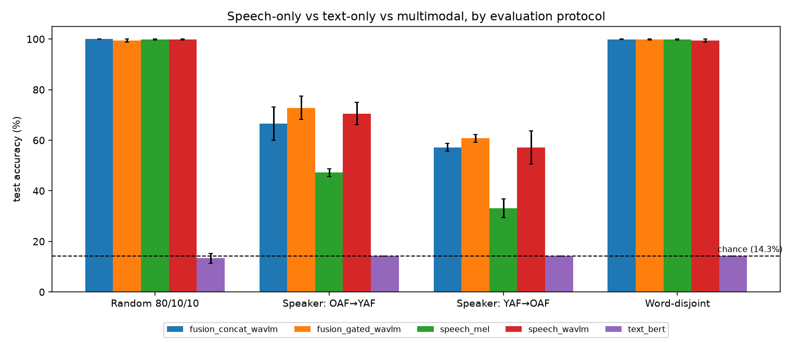
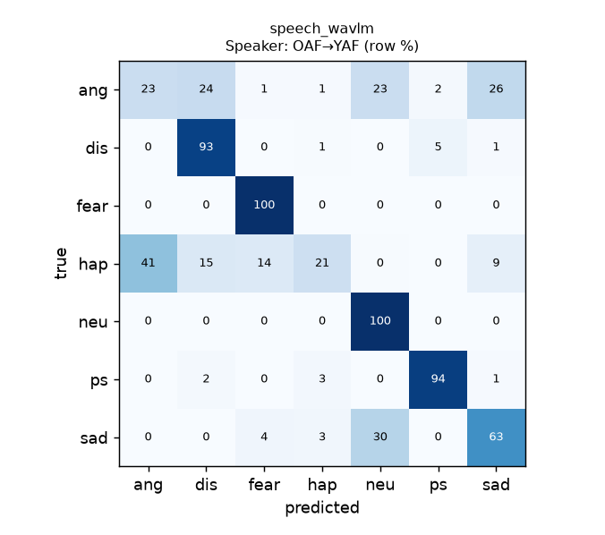
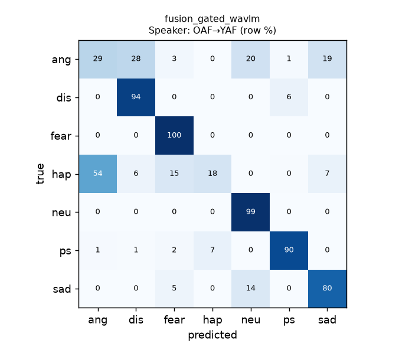
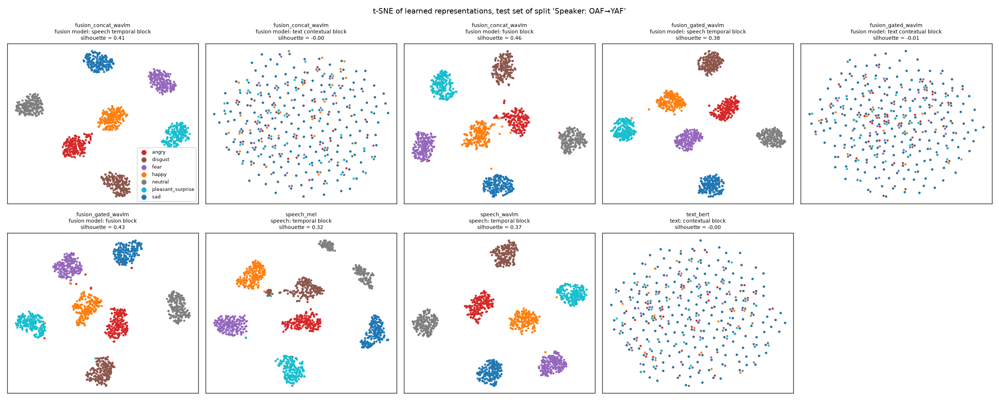
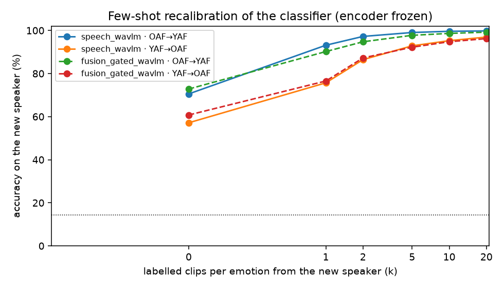

TESS has 2,800 clips: 2 actresses (OAF, aged 64; YAF, aged 26) × 200 target words × 7 emotions (angry, disgust, fear, happy, neutral, pleasant surprise, sad). It is perfectly balanced (200 clips per speaker and emotion). All clips were downloaded from the University of Toronto Dataverse. One file is mis-named in the release (OA_bite_neutral.wav), and the loader handles it. Audio is 24,414 Hz mono. The transcript is reconstructed from the file name as "Say the word <word>".
A random split puts both the same speaker and the same word in train and test, so I evaluate four protocols:
| Split | Train / val | Test | Question it answers |
|---|---|---|---|
| Random | 80 / 10 % (stratified by speaker × emotion) | 10 % | Standard benchmark, but optimistic |
| Speaker OAF→YAF | OAF (90 / 10 %) | all 1,400 YAF clips | Does it work for an unseen speaker? |
| Speaker YAF→OAF | YAF | all 1,400 OAF clips | The reverse direction (young → older voice) |
| Word-disjoint | 70 % / 10 % of words | 20 % of words (never seen) | Does it rely on the lexical content? |
| Block | Speech | Text |
|---|---|---|
| 1. Preprocessing | Resample 24.4 → 16 kHz mono (what WavLM was trained on). Trim leading/trailing silence (top_db = 30) so the model sees speech, not recording pauses. Peak-normalize to remove loudness differences between sessions. Crop to 3 s (longer than any trimmed clip) for a fixed memory budget; variable lengths are handled by padding and masks, not stretching. | Lower-case and WordPiece-tokenize with the BERT tokenizer ([CLS] say the word … [SEP], 6–8 tokens). No stop-word removal: the sentence is already minimal, and BERT expects natural text. |
| 2. Feature extraction (time × features) |
Frozen WavLM-Base+, layer 9 → (≈50 frames/s × 768). WavLM is pre-trained with denoising on 94k hours of speech. Its mid-upper layers carry prosodic and speaker-independent paralinguistic information, which is what transfers to an unseen speaker. Freezing it avoids over-fitting 2,800 clips. Baseline: 80-band log-mel (100 frames/s × 80), the classic hand-crafted input, to measure what pre-training adds. | Frozen bert-base-uncased, last layer → (tokens × 768). These are contextual embeddings: if the text carried emotional words, they would be encoded here. |
| 3. Temporal / contextual modelling | Linear 768→256, then a 2-layer bidirectional GRU, then attention pooling. The GRU models how pitch, energy and voice quality evolve over the utterance. Attention pooling learns to weight the emotionally salient frames: in TESS that is the stressed target word, not the carrier phrase. A GRU suits sequences of about 150 frames and has fewer parameters than a Transformer for 2.2k training clips. | Linear 768→256, then a 2-layer Transformer encoder (4 heads), then masked mean pooling. Self-attention models each token in the context of the whole sentence, which is the natural choice for text. Sequences are short, so cost is negligible. |
| 4. Fusion | Gated fusion: g = σ(W[s; t]), f = g ⊙ s + (1 − g) ⊙ t, followed by a linear+GELU+LayerNorm layer. The gate is computed per example and per dimension, so the model can learn how much to trust each modality, which matters when one modality is uninformative, as here. The gate value is also interpretable. Baseline: concatenation + projection. Both encoders are trained jointly with the fusion layer, end to end. | |
| 5. Classifier | MLP 256 → 256 → 7 (GELU, dropout 0.3), softmax with cross-entropy and label smoothing 0.05. A small head keeps the representations from blocks 3–4 doing the discriminative work, so the cluster plots in §4.4 reflect the learned features. | |
Training: AdamW (lr 3e-4, wd 0.01), one-cycle LR, batch 32, up to 40 epochs, early stopping on validation accuracy (patience 8), random time-crop augmentation for speech, 3 seeds per configuration. Features are extracted once and cached, so the full 60-run sweep takes about 25 min on an RTX 4050 laptop GPU.
| Model | Random | Speaker OAF→YAF | Speaker YAF→OAF | Word-disjoint |
|---|---|---|---|---|
| Speech: log-mel + BiGRU | 99.8 ± 0.2 | 47.2 ± 1.5 | 33.1 ± 3.7 | 99.8 ± 0.2 |
| Speech: WavLM + BiGRU | 99.9 ± 0.2 | 70.5 ± 4.4 | 57.1 ± 6.5 | 99.5 ± 0.6 |
| Text: BERT + Transformer | 13.3 ± 2.0 | 14.3 ± 0.0 | 14.3 ± 0.0 | 14.3 ± 0.0 |
| Fusion: concatenation | 100.0 ± 0.0 | 66.6 ± 6.6 | 57.2 ± 1.6 | 99.9 ± 0.1 |
| Fusion: gated | 99.4 ± 0.5 | 72.8 ± 4.6 | 60.8 ± 1.6 | 99.8 ± 0.2 |

| Recall (%) on the unseen speaker | angry | disgust | fear | happy | neutral | p. surprise | sad |
|---|---|---|---|---|---|---|---|
| WavLM speech, OAF→YAF | 23 | 93 | 100 | 21 | 100 | 94 | 63 |
| Gated fusion, OAF→YAF | 29 | 94 | 100 | 18 | 99 | 89 | 80 |
| WavLM speech, YAF→OAF | 17 | 80 | 99 | 8 | 73 | 40 | 83 |
| Gated fusion, YAF→OAF | 22 | 88 | 98 | 8 | 71 | 50 | 88 |
On the random split, all classes are ≥ 98 %. Easiest across speakers: fear (≈100 %), disgust, neutral. These have distinctive acoustic signatures that both actresses share: breathy, trembling high-pitched voice for fear; flat, low-energy delivery for neutral; a characteristic creaky, drawn-out delivery for disgust. Hardest: happy (8–21 %) and angry (17–29 %). Both are high-arousal emotions (raised pitch, energy and tempo). They differ mainly in valence, which is carried by subtler, speaker-specific cues such as voice quality and smile-related formant shifts. In the error analysis, happy → angry is the single most frequent confusion (77 of 335 errors). Pleasant surprise suffers similarly when testing on OAF (40–50 %): it is confused with happy, the other positive high-arousal class.


In TESS, fusion helps only marginally, and not because of the text. Three measurements show this:
| Fusion model | Split | Intact | Text shuffled | Speech shuffled |
|---|---|---|---|---|
| gated | OAF→YAF | 72.8 | 72.8 | 13.1 |
| gated | YAF→OAF | 60.8 | 60.7 | 13.5 |
| gated | Word-disjoint | 99.8 | 99.8 | 15.1 |
| concat | OAF→YAF | 66.6 | 66.6 | 13.0 |
| concat | YAF→OAF | 57.2 | 57.2 | 14.1 |
When fusion would help most: when the two modalities carry complementary information. That happens when the words themselves express emotion ("I'm furious", "this is wonderful"), or when the acoustic cue is ambiguous between two classes that the text separates (e.g. happy vs angry, our hardest pair: same arousal, opposite valence, and valence is exactly what lexical content conveys well). On conversational corpora such as IEMOCAP or MELD, text-only models perform far above chance and fusion typically gives clear gains. The gated design used here is chosen for that case: it learns to rely on text when text is informative and to fall back to speech when it is not, as it did here.
The five most confident errors of the gated fusion model (OAF→YAF, seed 0; 335 errors in 1,400):
| Clip | True | Predicted | p(pred) | p(true) | Likely cause |
|---|---|---|---|---|---|
| YAF_raid_happy | happy | angry | 0.98 | 0.01 | YAF's happy voice is louder, higher and faster than OAF's. Those are the cues the model learned as angry from OAF. The prediction is confidently wrong: a systematic speaker shift, not noise. |
| YAF_pad_happy | happy | angry | 0.97 | 0.01 | |
| YAF_dab_happy | happy | angry | 0.97 | 0.01 | |
| YAF_raise_happy | happy | angry | 0.96 | 0.01 | |
| YAF_thought_angry | angry | disgust | 0.96 | 0.00 | The word "thought" is long and voiced. YAF's angry delivery of it is drawn out, like OAF's disgust, so tempo rather than energy drove the decision. |
Most frequent confusions: happy → angry (77), angry → disgust (59), happy → fear (46), angry → sad (33), sad → fear (30), pleasant surprise → happy (23). All five top errors have p(true) ≤ 0.01. Confident errors like this mean the model needs speaker adaptation (per-speaker feature normalization, a few labelled clips from the new speaker, or more training speakers), not more capacity.

| Representation | Silhouette |
|---|---|
| Temporal block, speech-only (log-mel) | 0.32 |
| Temporal block, speech-only (WavLM) | 0.37 |
| Temporal block inside the gated fusion model | 0.38 |
| Contextual block (text), text-only and inside fusion | −0.01 to 0.00 |
| Fusion block (gated / concat) | 0.43 / 0.46 |
If the errors are well-separated clusters with the wrong labels, then relabelling them should need very few examples. I froze the trained encoders and refit only a logistic-regression classifier on k labelled clips per emotion from the unseen speaker, then tested on that speaker's remaining clips (3 seeds × 10 random draws).
| Model | Split | k = 0 (original) | k = 1 | k = 2 | k = 5 | k = 10 | k = 20 |
|---|---|---|---|---|---|---|---|
| Speech (WavLM) | OAF→YAF | 70.5 | 93.1 | 97.2 | 99.1 | 99.6 | 99.8 |
| Speech (WavLM) | YAF→OAF | 57.1 | 75.7 | 86.5 | 92.9 | 95.3 | 96.9 |
| Gated fusion | OAF→YAF | 72.8 | 90.2 | 94.8 | 97.8 | 98.6 | 99.2 |
| Gated fusion | YAF→OAF | 60.8 | 76.5 | 87.3 | 92.2 | 94.8 | 96.2 |

One labelled clip per emotion (7 clips, about 10 s of audio) lifts OAF→YAF from 70.5 % to 93.1 %, and five clips give 99.1 %. The representation learned from a single speaker already separates the new speaker's emotions almost perfectly. What fails to transfer is only the mapping from cluster to label. YAF→OAF recovers more slowly (92.9 % at k = 5), consistent with it being the harder direction. In practice, a short enrolment of a few labelled utterances per speaker is a far cheaper fix than collecting more training speakers.